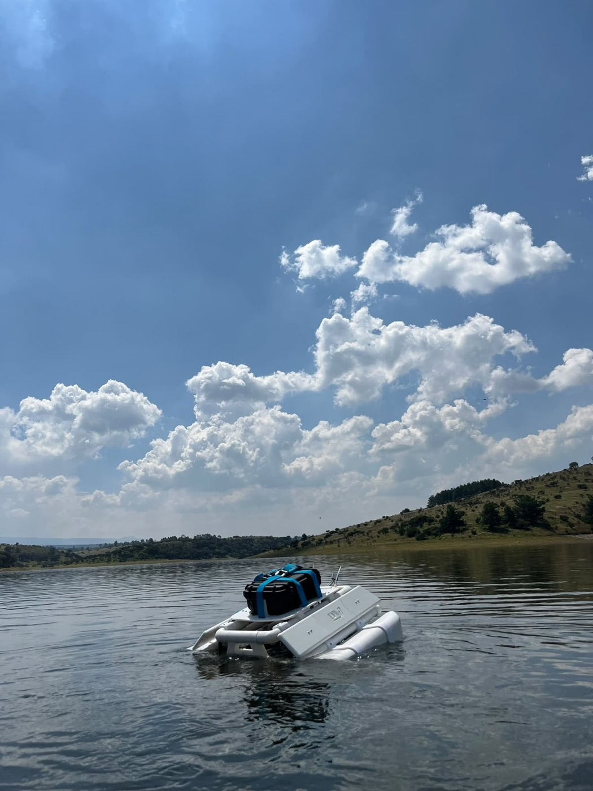
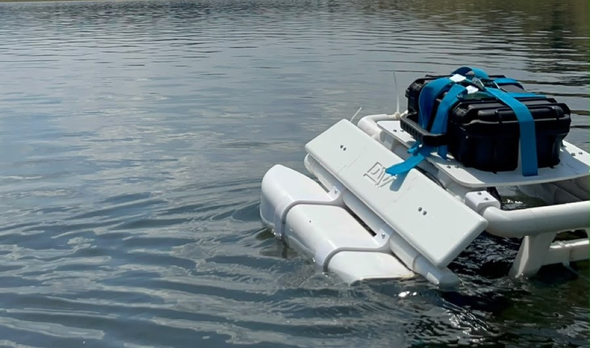
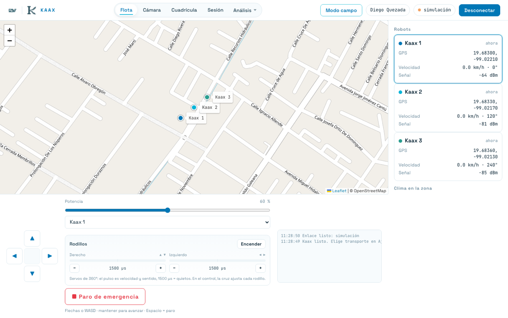
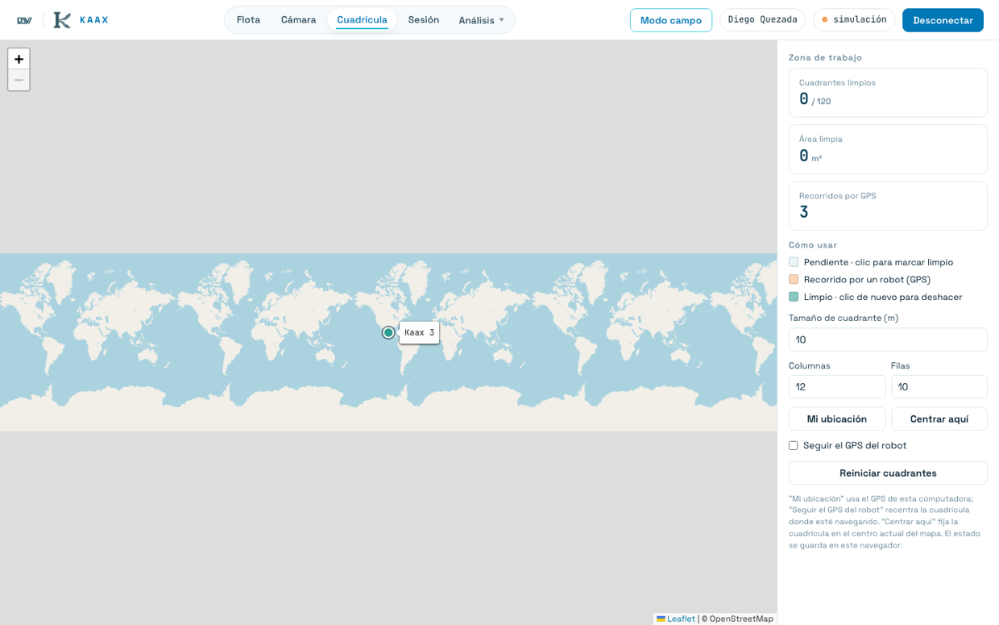
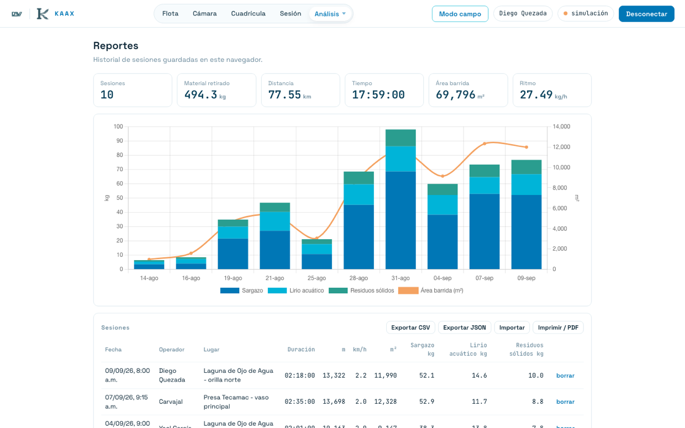

Un catamarán autónomo con GPS, propulsión
dual y rodillos que empujan el material hacia adentro. A bordo lleva una Raspberry Pi 5
que crea su propia red WiFi, así que funciona sin señal en el agua.
cargando modelo…
Chasis · Base V3 — arrástralo para girarlo
Computadora a bordo
Raspberry Pi 5
Enlace
WiFi · hotspot propio
Navegación
GPS NEO-6M · NMEA
Propulsión
2 × thruster con ESC
Recolección
2 × servo 360° (rodillos)
Energía
2 × LiPo 4S
Visión
Cámara + Teachable Machine
Seguridad
Failsafe a 1.5 s sin enlace
Control
Teleoperado autónomo en desarrollo
Funcionamiento en campo
Pruebas del prototipo en presa,
México.
Kaax en operación · prueba en presa

Navegación autónoma sobre agua abierta

Electrónica sellada sobre la cubierta
Sobre los 4 kg: es la capacidad de carga del
robot, no lo que recoge en una jornada. Kaax no transporta el material a bordo:
lo arrastra hacia la orilla con los rodillos y la red, así que lo recolectado
no está limitado por ese peso. Los 4 kg son lo que puede llevar encima —
electrónica, baterías e instrumentos— sin perder estabilidad ni flotación.
Flotó
en todas las pruebas, desplazándose correctamente
4 kg
de capacidad de carga, con operación estable
Sin filtraciones
componentes sellados, impermeabilización validada
⬡
Autonomía en el agua
Si el robot deja de recibir órdenes por más de 1.5 segundos, los motores y los
rodillos se detienen solos. Un rodillo girando sin enlace no se para por sí mismo,
y esa es justo la situación que el sistema tiene que cubrir.
◐
Autonomía: lo que hay y lo que falta
Hoy Kaax se teleopera: un operador lo conduce desde la estación de control
y el robot registra su recorrido por GPS. El modo autónomo está planeado y
sigue en desarrollo — la detección de sargazo por color y las rutas
predictivas ya están diseñadas, pero todavía no operan solas en el agua.
Cuando llegue, será autonomía acotada y siempre bajo
supervisión humana. Ante la duda, no captar: un falso positivo tiene consecuencia
física sobre fauna viva.
▦
Medición, no estimación
Cada jornada registra distancia recorrida por GPS, velocidad media, área barrida
y cuadrantes limpiados. El peso recolectado se captura a mano al pesar la carga,
porque inventarlo haría inútil el resto.
El software
La estación de control
Kaax no se maneja con un control
remoto: se maneja desde una interfaz que además mide. Corre en el navegador, se
instala como aplicación y funciona sin internet, porque en el agua no hay
señal.

Flota. Posición de cada robot en el mapa, telemetría en vivo,
control por teclado o mando, y los rodillos de recolección.

Cuadrícula. La zona se divide en cuadrantes y los que el robot
recorre se marcan solos con el GPS.

Reportes. Kilos por tipo de contaminante, área barrida,
distancia y ritmo, jornada por jornada.
⬇
Sin internet
La aplicación y el mapa se guardan en el dispositivo antes de salir. En el
agua todo se registra, y al volver a la red se sincroniza solo.
◷
Mide mientras trabaja
Distancia por GPS, velocidad, área barrida y cuadrantes limpiados salen de la
propia jornada. El peso se captura al pesar la carga.
⚑
Cuentas por equipo
Cada operador entra con su cuenta y las jornadas quedan asociadas a él, así el
historial de un cuerpo de agua es de todo el equipo.
Qué cuesta construir un Kaax y de dónde
sale el dinero.
Venta
$25,000 / unidad
Robot, mecanismo de captación, estación de control y capacitación.
Suscripción
$800 / mes
Soporte, refacciones de desgaste y plataforma de datos.
Costo unitario de producción
El costo por unidad
cae a menos de la mitad al pasar de una pieza a una serie de cincuenta.
1 unidad$16,000
10 unidades$9,000
50 unidades$7,000
250 unidades$6,500
Punto de equilibrio anual estimado en 50 unidades. Cifras en pesos
mexicanos.
◲
$86 millones
Presupuesto de limpieza de un solo municipio en 2026. El mercado no hay que
crearlo: ya existe y ya se gasta.
Heraldo de México Quintana Roo (2026)
◳
$90,000 · 9 meses
Costo de jornaleros en Tulum durante nueve meses de temporada, haciendo a mano
el trabajo que Kaax automatiza.
◴
Público objetivo
Municipios y gobiernos estatales · CONAGUA y SEMARNAT · cooperativas pesqueras ·
operadores turísticos de la Riviera Maya, Pátzcuaro y Valle de Bravo.
Materiales de un robot
Costo de materiales de una unidad, en pesos. Es lo que cuesta construirla a mano:
no incluye horas de trabajo ni la reducción por volumen del cuadro de arriba.
Partida
Qué incluye
MXN
Motores y demás
Thrusters con ESC, baterías LiPo 4S y GPS
$3,600
Raspberry
Computadora de a bordo
$5,000
Estructura
Caja estanca, espuma de flotación y herrajes
$1,800
Filamento
PLA, PETG y ASA para las piezas impresas
$538
Materiales 1
Consumibles y ferretería
$200
Materiales 2
Consumibles y ferretería
$100
Total en materiales
$11,238
El costo final de producción está redondeado tomando en cuenta
rediseños de piezas, tornillería y consumibles. ¿A quién no se le ha perdido
un tornillo alguna vez?